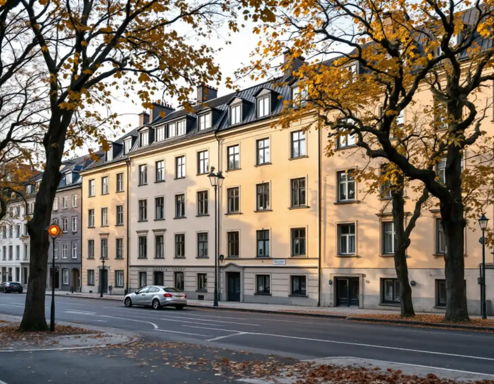

Takbyte på Östermalm
Byte av tegel-, betong- och plåttak.
Takbyte på Östermalm →
På Östermalm är taken en del av stenstadens kulturvärden.
Skicka gärna en bild på taket.
Något blev fel. Kontrollera uppgifterna eller ring 08 12 410 276.
Vi tittar på jobbet på plats innan du får offert.
Du ser vad som ingår och vad det kostar.
Vi drar av ROT direkt och sköter ansökan.
Geal Entreprenad AB, Bromma. Org.nr 559303-7566.
Vi är takläggare på Östermalm för föreningar och fastighetsägare – omläggning av plåttak, takfötter, kupor och takavvattning – och tar fram underlaget som Stadsmuseet och stadsbyggnadskontoret behöver.
I statistikområdet Hedvig Eleonora på Östermalm fanns 7 344 bostäder 2025 enligt stadens områdesfakta. 5 164 var bostadsrätter och 2 110 hyresrätter hos privata värdar, medan allmännyttan hade 68. Taken ägs alltså av föreningar och fastighetsägare, och det är styrelsen eller förvaltaren som beställer.
Östermalm hör till den klassiska stenstaden från 1870–1930 enligt stadens riksintressebeskrivning. Där lyfts breda trädkantade esplanader, en enhetlig höjdskala och sammanbyggda fasader fram, liksom sluttande, oftast plåttäckta tak. Vindsinredningar och andra begränsade förändringar kan prövas, men enligt varsamhetskraven i plan- och bygglagen.
Klassningen spelar stor roll här. Stadsmuseets karta markerar byggnader med blått, grönt, gult och grått, och riksintresset med en blå ring. Är huset blå- eller grönmarkerat krävs bygglov även för åtgärder som annars är lovfria. Vi börjar därför varje takprojekt med att slå upp fastigheten.
Många tak på Östermalm har takkupor, torn och detaljer i plåt som är en del av husets arkitektur. När ett sådant tak läggs om är det detaljerna som tar tid: kupornas sidor och tak, ränndalar mellan takfall och dekorativa plåtar längs takfoten. Vi mäter och dokumenterar dem innan rivningen, så att de nya delarna får samma form och mått som de gamla.
Oavsett om du behöver ett komplett takbyte eller en riktad renovering ger vi en tydlig bedömning och offert. Vi arbetar även i grannområden – se alla områden vi arbetar i.
Stadsmuseets klassificeringskarta ger en första indikation på om ett hus är kulturhistoriskt värdefullt, men staden skriver att det kan behövas en bedömning från museet. Förfrågan skickas med e-post till Stadsmuseet tillsammans med adress, fastighetsbeteckning och stadsdel, byggår, eventuella ombyggnader och foton av fastigheten och dess fasader. Museet brukar svara inom tre veckor efter att allt har kommit in.
Streckade ytor i kartan är miljöer som ännu inte har inventerats. Där kan bygglov krävas trots att huset saknar färg, och då är museets bedömning ett bra första steg innan föreningen beställer ritningar.
Riksintressebeskrivningen nämner breda trädkantade esplanader, en enhetlig höjdskala och sammanbyggda fasader i gatuliv som stenstadens kännetecken. Gatufasaden delas i sockelvåning och huvudfasad med en markerad takfot. Taket är därför den översta delen av en gatubild som är tänkt som en helhet.
När vi lägger om ett plåttak här behåller vi takets form och lutning och stämmer av kulören mot huset. Detaljer som takfotens plåtar, snörasskydd och stuprör följer det befintliga mönstret.
En detaljplan kan enligt staden innehålla skyddsbestämmelser och bestämmelser om utökad lovplikt, och då kan även underhållsåtgärder kräva lov. Vi läser detaljplanen för fastigheten innan vi föreslår material, så att föreningen vet om omläggningen behöver lov innan arbetet planeras in.
Om huset är särskilt värdefullt kan staden också kräva en antikvarisk förundersökning, en konsekvensbeskrivning eller att en certifierad sakkunnig inom kulturvärden följer arbetet. Det påverkar tidplanen mer än själva plåtarbetet, och därför tar vi upp frågan redan vid första besöket.
Under stenstadens plåttak finns ofta en vind som inte värms upp. Boverket skriver att kalla vindar ofta drabbas av fuktskador, och att det kan leda till dålig inomhusmiljö och hälsoproblem. Fukten kan komma uppifrån genom ett läckande tak, men också inifrån huset.
Därför börjar vi en takbesiktning på Östermalm inne på vinden. Mörka partier på råsponten, mögellukt eller rost i plåtens infästningar visar var vatten eller fuktig luft har kommit in. Ibland räcker det att täta några genomföringar, ibland behöver underlaget bytas när plåten läggs om. Styrelsen får foton på det vi har sett och vår bedömning av vad som är brådskande och vad som kan vänta.
Byte av tegel-, betong- och plåttak.
Takbyte på Östermalm →Riktade åtgärder som förlänger takets liv.
Takrenovering på Östermalm →Bedömning av skick inför beslut.
Takbesiktning på Östermalm →Nytt ytskydd på plåttak.
Takmålning på Östermalm →Skonsam tvätt och mossbehandling.
Taktvätt på Östermalm →Nytt plåttak och plåtarbeten.
Plåttak på Östermalm →Vi utgår från Bromma och tar takuppdrag på hela Östermalm, från Strandvägen till Gärdet och Hjorthagen. Styrelsen får en skriftlig bedömning, foton och ett kostnadsförslag att besluta om. Behövs Stadsmuseets bedömning eller ett bygglov planerar vi in det innan ställningen beställs.
Läs mer om tak på villa eller jämför takbyte och takrenovering innan du bestämmer dig.
Vi arbetar även i Vasastan.
Takläggare i Vasastan →Vi arbetar även på Södermalm.
Takläggare på Södermalm →Vi arbetar även på Lidingö.
Takläggare på Lidingö →Vi arbetar även i Danderyd.
Takläggare i Danderyd →Eller ring 08 12 410 276, mån–fre 08–17.
Skicka gärna en bild på taket.
Något blev fel. Kontrollera uppgifterna eller ring 08 12 410 276.